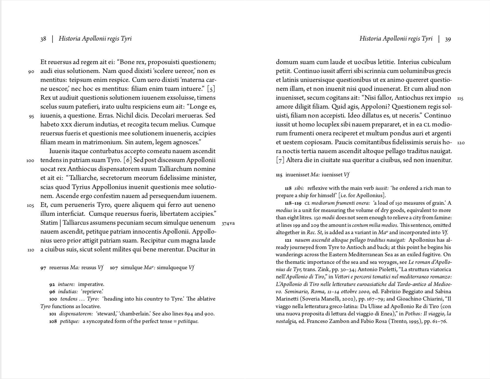
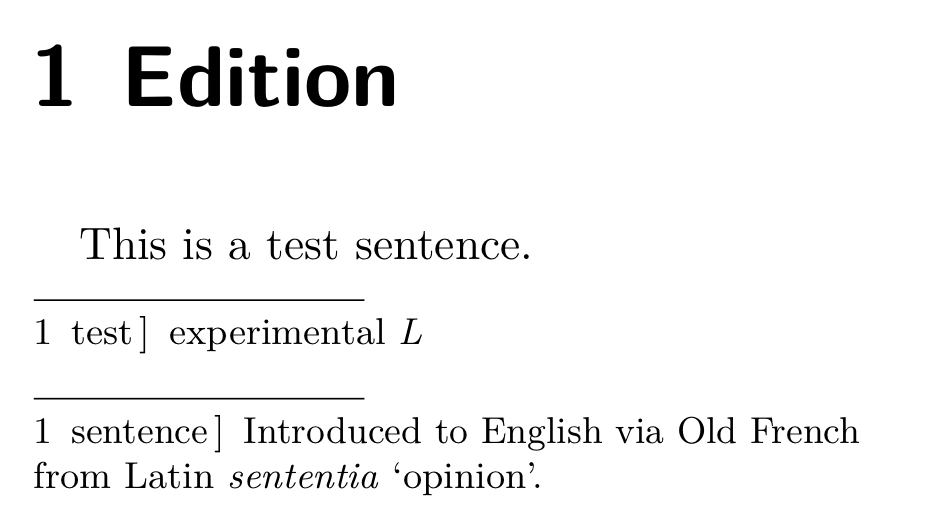
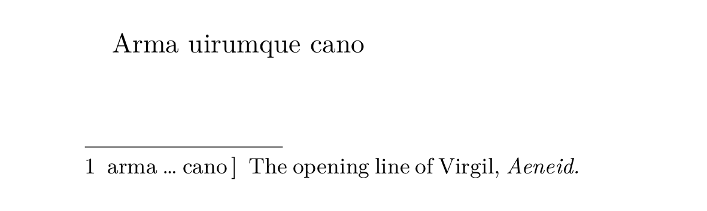
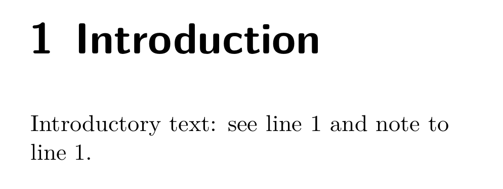
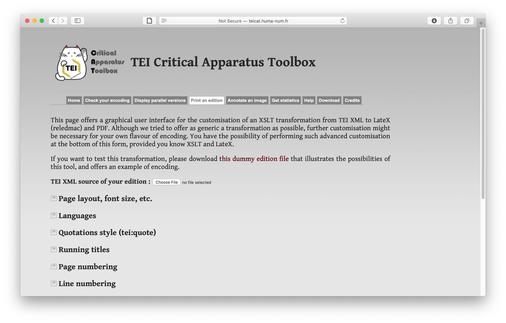

Reledmac. Typesetting technology-independent critical editions with LaTeX
Table of Contents
Abstract
Reledmac, an open-source package for the LaTeX typesetting system, offers a reliable method to arrange text on a page with multiple levels of scholarly apparatus and commentary. Its straightforward interface and wide availability has allowed its use in several projects aiming to visualize an edition encoded in TEI XML in a printed format.
Introduction
It is questionable whether anyone is happy with the traditional format of the critical printed edition. The critical apparatus was designed around the constraints of typesetting in the eighteenth century, and leaves much to be desired as a method of visualizing textual variation. Researchers rely daily on being able to search primary sources, but most public corpora are based on editions from the nineteenth century, since few series of critical editions make their texts openly available in digital form. Nonetheless, many academics view printed books as the most reasonable method of publishing critical editions in light of concerns over digital publications’ stability, readability, and authority. If we wish to encourage more scholars to start editing texts in ways that exploit the computing resources available to us, we need to provide ways to produce editions that give the best possible presentations of a text in both digital and print forms – editions that are designed for humans to read as well as our machines.
There is not yet a reusable solution to editing texts in such a technology-independent form, but one of the key pieces in this puzzle has existed for decades: software for automatically typesetting texts with a scholarly apparatus. Maïeul Rouquette’s Reledmac, a package for the venerable LaTeX typesetting system, has emerged as a readily available program that, used correctly, can produce professional results. A non-comprehensive bibliography lists almost seventy publications that have used it with a multitude of languages, including contributions from leading scholars (Wujastyk and Rouquette 2013). Although the package’s gestation over more than three decades has resulted in some quirks, the wide support for LaTeX and its portability to nearly any system has made Reledmac’s adoption possible by several digital editing projects, showing its potential as a key piece of scholarly infrastructure.

Reviving typography with TeX
Reledmac is a mature tool with a long gestation; to understand its advantages, success, and idiosyncrasies, one needs to consider it within the development of the TeX typesetting system, which is sometimes called ‘plain TeX’ to distinguish it from the typesetting systems based on it such as LaTeX. Donald Knuth, a computer scientist and mathematician, first released this program in 1978 in reaction to the poor quality of early digitally typeset books (Knuth 1986 is his comprehensive guide). This program quickly became popular in academic circles, and is particularly respected for the Knuth-Plass line breaking algorithm (Knuth and Plass 1981), which composes text as a paragraph to minimize hyphenation and other typesetting problems. By contrast, standard word processors and Web browsers still compose text on a line-by-line basis, which produces a distinctly mechanical feel and reduces reading comprehension.
Both medieval scribes and early printers aimed for evenness in what designers now call ‘type colour’, producing text blocks that look almost grey when one squints at them, without distracting gaps or abrupt combinations of heavy and light text. The industrialization of typesetting beginning in the nineteenth century gradually eroded this principle. The developers of phototypeset books, beginning in the 1950s, almost completely ignored it. This underlies much of the poor quality of a digitally produced book from the 1970s in comparison to its equivalent from earlier centuries.
The celebrated typographer Hermann Zapf further advanced the state of automated typesetting with his Hz-program, introducing what is sometimes called ‘microtypography’. This software implemented the techniques of scribes and the first type compositors to produce consistent type colour by using narrower or wider versions of characters (Zapf 1993; Bringhurst 2013). This was far more laborious to produce in print than in manuscript, and quickly fell by the wayside, but this does not make the underlying concept less useful. It has been used for many recent books after Adobe Systems acquired Zapf’s software for integration in its page layout software, InDesign. The principles have also been implemented for TeX, and can be easily included in any document using the Microtype package (Schlicht 2004–2019). It is this approach to paragraph composition that allows the TeX family of software to produce such excellent results.
The LaTeX ecosystem
Few people now use TeX directly, instead using a derivative such that
facilitates a structured approach to typesetting. Leslie Lamport released LaTeX
in 1983, abstracting much of TeX behind macros centred on the organization of a
document. For example, it provides a \chapter{Chapter Title}
command to begin a new book chapter. A team of volunteers continues to maintain
this program. LaTeX works around the principle of a document class,
which allows one to specify a module that provides a starting design for a
typical type of publication, such as an article, book, or letter. Developers
have produced a wide range of classes that cover various scenarios, as well as
packages that add extra capabilities to other classes –
Reledmac is one of these.
These additions are both the greatest strength and weakness of LaTeX. Individual volunteers write most packages, which provide additional TeX programming that exists on the same level as LaTeX itself. They can produce unexpected results when combined. The creators of packages often cease to maintain them, and old packages are rarely pruned from CTAN, the standard repository for TeX-related software, leaving traps for users who might accidentally use one of these packages after finding an old reference to it. This situation has been remedied in part through the creation of KOMA-Script (Kohm 1994–2019) and Memoir (Wilson and Madsen 2001–2018), providing versatile and carefully conceived classes that eliminate the need for many packages and provide their own reference manuals covering most aspects of LaTeX. It is such packages, combined with the generous community of users that maintain online help forums, that has sustained LaTeX over so many years in spite of many shortcomings in its design.
The final complication of using TeX is the series of different engines that can turn its files into a PDF: there are three different options, each with limitations. TeX predates both PDF files and the need to display formatted documents on a screen: it originally produced its own format to be fed into a printer. An engine emerged by the late 1990s for producing a PDF from a TeX file, called pdfTeX; but it cannot handle many Unicode characters or normal system fonts. XeTeX is the second engine typically used today, implementing Unicode and modern font technologies, but in a way that broke compatibility with earlier LaTeX packages (including Microtype). LuaTeX is gradually emerging as a replacement for both, maintaining compatibility with pdfTeX alongside the innovations of XeTeX. It has not yet caught on universally, however, because it is much slower than the other two engines. Some linguistic support available for XeTeX (especially for right-to-left languages) is not yet complete for LuaTeX. As a result, the seemingly simple operation of turning a LaTeX file into a PDF can be fraught with complications.
An attempt to streamline this complex situation exists in ConTeXt, a more recent abstraction of TeX independent of LaTeX. In spite of its many improvements, it has yet to gain comparable traction because it lacks the ready-made classes and packages that allow one to quickly produce good results with LaTeX, as long as one is working within its paradigm. LaTeX is truly a reflection of humanity, showing the beauty that collective generosity can produce, but also the confusion that results from a lack of coordination.
Typesetting an edition with Reledmac
It is within this web of packages and different interfaces for TeX that Reledmac exists, and its history defines both its strengths and limitations. Reledmac originates in Edmac (short for ‘editing macros’), which John Lavagnino (a Shakespearean and systems manager then at Brandeis University, now at King’s College London) and Dominik Wujastyk (a Sanskrit scholar, then at the Wellcome Institute for the History of Medicine, now at the University of Alberta) designed in 1987–89, developing it in their spare time to support their own editing work (Lavagnino and Wujastyk 1990; Wujastyk 1993). LaTeX had not yet become widespread, and they designed the package to interact directly with plain TeX without taking LaTeX functionality into account. Beginning in 1994, Peter Wilson (a specialist in information modelling) ported the package to LaTeX as a pure labour of love, renaming it Ledmac (Walden 2006). Wilson was responsible for a large number of LaTeX packages, leaving a maintenance gap on his retirement that took several people to fill (Robertson 2009).
Maïeul Rouquette, a scholar of early Christianity at the University of Lausanne, took over Ledmac in 2011 when he was using it to write his doctoral thesis (Rouquette 2017), renaming it first Eledmac and then Reledmac, which allowed him to revise the interface and functionality without affecting projects that used older versions. He has since continued to improve the package’s functionality beyond the scope of his own research. Rouquette has also put significant energy into writing thorough documentation, alongside a general introduction to LaTeX for humanists that discusses Reledmac alongside Reledpar, its sister package for setting parallel texts (Rouquette 2012). The project’s GitHub repository lists fourteen other minor contributors. The culture of open-source software created out of goodwill for a practical end without explicit funding is typical for LaTeX packages. This haphazard model often produces useful results, but it is not clear that it is sustainable, especially as the employment of early-career researchers becomes increasingly unstable.
The legacy of the original Edmac and the process of its transition to LaTeX remains evident in the package as it now exists. Wilson had only the goal of making the package functional, and did not rewrite it to use the logic of LaTeX. As a result, the package must emulate the functionality of many basic LaTeX macros such as headings and block quotations rather than use them directly, and they often do not behave in the way one expects. For instance, although KOMA-Script and Wilson’s own Memoir class include environments for setting verse, they give unexpected results in Reledmac, and one instead needs to use its internal mechanism. One needs to treat Reledmac almost as a separate system from LaTeX, and the package would need to be rewritten to resolve this situation. The Ednotes package began this effort (Lück 2003), but it never reached equal functionality and development ceased in 2006. This situation is not the fault of the package’s authors, but it increases the challenge of converting text for typesetting in LaTeX with Reledmac, as well as the learning curve.

Files using Reledmac can be rendered using any LaTeX engine. It
results in slightly longer compilation times than normal, because it needs to
generate extra temporary files. The example above enables two series of critical
notes with Reledmac. (One can instead use standard numbered footnotes or
endnotes.) The \edtext{text}{commands} command marks a word or
phrase for comment; one can add as many commands as necessary in the second set
of braces for a critical apparatus, source apparatus, or whatever else the
edition requires. One can have multiple notes on the same word using
\Afootnote, \Bfootnote, and so forth.
\lemma command.\lemma command to truncate the text (see also Fig. 3):
This must be done by hand for every note that does not quote the full lemma. In some cases, this is advantageous. For commentaries in particular, the ability to write one’s own lemma to focus on the precise passage in question is a great help. On the other hand, it would be a great service if Reledmac could borrow Classical Text Editor’s options for setting document-wide styles to automatically process lemmata by truncating a phrase to the first and last words; removing punctuation and other specified characters; making the text lowercase; and transliterating text as appropriate, for example from V to u in Latin. Similarly, it would be useful to have an option to abbreviate number ranges automatically (e.g. changing ‘107–108’ to ‘107–8’). These, however, are among the few obvious examples of missing functionality in the package.

Reledmac has several commands for creating cross references, but
most users will only need two. The \SEref{label} command allows one
to refer to a range of text between \edlabelS{label} and
\edlabelE{label} (or \edlabelSE{label} for a
single point in the text). The \appref{label} allows one to refer
to the lines to which a critical note labelled with
\applabel{label} refers.
Using Reledmac with TEI
LaTeX syntax is less verbose than XML, and I have known several colleagues who have found it initially much easier to understand than TEI. Over the long term, however, writing an edition in TEI rather than directly in LaTeX is more sustainable, even if it is intended purely for print publication. From a practical perspective, XML validation allows one to find errors more quickly: a missing bracket can cause LaTeX to fall over itself in reporting obtuse error messages through its logs, which themselves are more difficult to read than necessary. Reledmac is focused purely on typesetting, making it difficult to develop mechanical checks for one’s editorial work. TEI’s focus on semantic markup is highly useful in this respect, and a number of researchers have taken advantage of this on a project-level basis. It is crucial that the TEI community seize this opportunity if it wishes to be viewed as a serious publishing option.
There are a number of scripts available for typesetting TEI editions with LaTeX and Reledmac, most of them developed to fit the needs of specific projects. The earliest of these is part of the TEI Consortium’s official stylesheets (Rahtz et al. 2011–2019). These stylesheets do not render text following any scholarly convention for a printed critical edition, and are complex to modify. As a result, implementations for individual projects are usually written from scratch (e.g. Witt 2018; Camps 2017; McLean 2015–2016). None yet offer a general-purpose tool that renders TEI elements into the form one would normally expect for printed editions of premodern texts.

Such attempts are achievable because of the wide support for integrating LaTeX into other environments and its portability. Any full LaTeX distribution4 includes Reledmac, ranging from versions for every common platform to editions that work inside a browser such as Overleaf5. Rouquette has made a concentrated effort to document the package’s options, alongside his introductory book to LaTeX. There is also an active community of users that provide support for one another in the Reledmac section on TeX Stack Exchange6. The plethora of online tutorials for LaTeX and the wide availability of the software, including on mobile platforms, makes it much easier to gain usable results from it than from TEI if one is working independently.
At the same time, LaTeX has a number of oddities that can make transformation from XML somewhat complex. For example, there is no standard mechanism for changing the language, as there are two mutually incompatible packages for achieving this (Babel7 and Polyglossia8). Reledmac also poses its own difficulties. For the historical reasons noted above, it is necessary to encode text (including headings and paragraphs) slightly differently from normal LaTeX. It also cannot automatically index identical words in a single line. In a critical apparatus, if one has two instances of ‘et’ in a single line, one would refer to them as ‘et1’ and ‘et2’. An extra script can mostly remedy this, but there remain some situations in which it must be checked by hand (Christensen 2018). In short, LaTeX is not the solution we would create today if we were developing it again from scratch – but it is the one we have, and it can produce excellent results when used carefully.
Future directions
Given this history of software cobbled together by a series of programmers, humanists, and non-specialists in spare time over three decades, it is a small miracle that LaTeX with Reledmac is not merely functional but has become the most reliable method of automatic typesetting for critical editions. It is to be hoped that one day the editing community will band together to give the project more support and ensure its sustainability, for it is clear that Rouquette could create a much more functional package if he had the time, resources, and desire to redesign it from the ground up. Both using the package directly and typesetting critical editions from TEI XML would be much more straightforward with a package designed from the outset to work with LaTeX. Alternatively, there might be more promise in creating a critical editing module for ConTeXt, a rationalized competitor to LaTeX that has a focus on typesetting XML directly without the need to first transform it into a different markup language. There have been some forays down this path (Hamid 2007), but nothing has yet seen the light of day.
In the small field of software for critical editing, Reledmac fills a helpful niche alongside the more complex TUSTEP (Ott 1979; Schälkle and Ott 2018) and the commercial Classical Text Editor (Hagel 2007), focusing on providing a key element of a publishing workflow rather than an all-encompassing editing environment. Its interface is as user-friendly as one can achieve in LaTeX code; its clear documentation and examples mean that one can reasonably expect to learn it oneself; and it can produce documents of the highest quality. One can hardly ask for more, and our community is indebted to Rouquette and his predecessors for putting so much of their energy into the basic digital infrastructure for the humanities that often goes unacknowledged.
Bibliography
- Bringhurst, Robert. 2013. The Elements of Typographic Style. 4th ed. Vancouver, BC: Hartley & Marks.
- Burghart, Marjorie. 2016. ‘The TEI Critical Apparatus Toolbox: Empowering Textual Scholars Through Display, Control, and Comparison Features’. Journal of the Text Encoding Initiative 10 (December). https://doi.org/10.4000/jtei.1520.
- Camps, Jean-Baptiste. 2017. TEItoLaTeX. https://github.com/Jean-Baptiste-Camps/TEItoLaTeX.
- Christensen, Michael Stenskjær. 2018. Samewords: Word Disambiguation in Critical Text Editions. https://doi.org/10.5281/zenodo.1306292.
- Dekker, Dirk-Jan. 2012. ‘Typesetting Critical Editions with LaTeX: Ledmac, Ledpar and Ledarab’. 11 November 2012. http://www.djdekker.net/ledmac/.
- Dunning, Andrew N. J. 2016. Samuel Presbiter: Notes from the School of William de Montibus. Toronto Medieval Latin Texts 33. Toronto: Pontifical Institute of Mediaeval Studies.
- Hagel, Stefan. 2007. ‘The Classical Text Editor. An Attempt to Provide for Both Printed and Digital Editions’. In Digital Philology and Medieval Texts, edited by Arianna Ciula and Francesco Stella, 77–84. Ospedaletto: Pacini. http://www.infotext.unisi.it/upload/DIGIMED06/book/hagel.pdf.
- Hamid, Idris. 2007. ‘A Short Introduction to Critical Editions’. In ConTeXt User Meeting. Epen, Netherlands. https://meeting.contextgarden.net/2007/share/idris/cr-apparatus.pdf.
- Knuth, Donald E. 1986. The TeXbook. Computers & Typesetting, A. Reading, MA: Addison-Wesley.
- Knuth, Donald E., and Michael F. Plass. 1981. ‘Breaking Paragraphs into Lines’. Software: Practice and Experience 11 (11): 1119–84. https://doi.org/10.1002/spe.4380111102.
- Kohm, Markus. 1994–2019. KOMA-Script: A Versatile LaTeX2ε Bundle. https://ctan.org/pkg/koma-script.
- Krewinkel, Albert, and Robert Winkler. 2017. ‘Formatting Open Science: Agilely Creating Multiple Document Formats for Academic Manuscripts with Pandoc Scholar’. PeerJ Computer Science 3 (May): e112. https://doi.org/10.7717/peerj-cs.112.
- Lavagnino, John, and Dominik Wujastyk. 1990. ‘An Overview of EDMAC: A Plain TeX Format for Critical Editions’. TUGboat 11 (4): 623–43. https://doi.org/10.7939/r3416td5f.
- Lück, Uwe. 2003. ‘Ednotes — Critical Edition Typesetting with LaTeX’. TUGboat 24 (2): 224–36. https://tug.org/TUGboat/tb24-2/tb77lueck.pdf.
- MacFarlane, John. 2006–2019. Pandoc. https://pandoc.org/.
- McLean, Tom. 2015–2016. Tei_transformer. https://github.com/fizzbucket/tei_transformer.
- Ott, Wilhelm. 1979. ‘A Text Processing System for the Preparation of Critical Editions’. Computers and the Humanities 13 (1): 29–35. https://doi.org/10.1007/bf02744990.
- Rahtz, Sebastian, Martin D. Holmes, Hugh Cayless, and Syd Baumann. 2011–2019. TEI XSL Stylesheets. Text Encoding Initiative Consortium. https://github.com/TEIC/Stylesheets.
- Robertson, Will. 2009. ‘Peter Wilson’s Herries Press Packages’. TUGboat 30 (2): 290–92. https://www.tug.org/TUGboat/tb30-2/tb95robertson.pdf.
- Robins, William. 2019. Historia Apollonii regis Tyri: A Fourteenth-Century Version of a Late Antique Romance. Toronto Medieval Latin Texts 36. Toronto: Pontifical Institute of Mediaeval Studies.
- Rouquette, Maïeul. 2012. (Xe)LaTeX appliqué aux science humaines. Tampere: Atramenta. https://halshs.archives-ouvertes.fr/halshs-00924546.
- ———. 2017. ‘Étude comparée sur la construction des origines apostoliques des Églises de Crète et de Chypre à travers les figures de Tite et de Barnabé’. PhD thesis, Université de Lausanne.
- Schälkle, Kuno, and Wilhelm Ott. 2018. TUSTEP: Tübinger System von Textverarbeitungs-Programmen. Tübingen: Pagina. http://www.tustep.uni-tuebingen.de/pdf/handbuch.pdf.
- Schlicht, Robert. 2004–2019. The Microtype Package. https://ctan.org/pkg/microtype.
- Walden, David. 2006. ‘Peter Wilson: Interview’. TeX Users Group. 8 November 2006. https://tug.org/interviews/wilson.html.
- Wilson, Peter R., and Lars Madsen. 2001–2018. The Memoir Class. https://www.ctan.org/pkg/memoir.
- Witt, Jeffrey C. 2018. ‘Digital Scholarly Editions and API-Consuming Applications’. In Digital Scholarly Editions as Interfaces, edited by Roman Bleier, Martina Bürgermeister, Helmut W. Klug, Frederike Neuber, and Gerlinde Schneider, 219–47. Schriften des Instituts für Dokumentologie und Editorik 12. Norderstedt: Books on Demand. https://nbn-resolving.org/urn:nbn:de:hbz:38-91182.
- Wujastyk, Dominik. 1993. Metarules of Pāṇinian Grammar: The Vyāḍīyaparibhāṣāvṛtti Critically Edited with Translation and Commentary. 2 vols. Groningen Oriental Studies 5. Groningen: Forsten.
- Wujastyk, Dominik, and Maïeul Rouquette. 2013. ‘Critical Editions Typeset with EDMAC, LEDMAC, eLEDMAC and reLEDMAC’. Zotero. 2013. https://www.zotero.org/groups/209265/critical_editions_typeset_with_edmac_ledmac_eledmac_and_reledmac.
- Zapf, Hermann. 1993. ‘About Micro-Typography and the Hz-Program’. Electronic Publishing 6: 283–88. http://cajun.cs.nott.ac.uk/compsci/epo/papers/volume6/issue3/zapf.pdf.
Notes
- https://web.archive.org/web/20191211173320/https://ctan.org/pkg/reledmac. ↑
- https://web.archive.org/web/20191211173409/https://pandoc.org/. ↑
- https://web.archive.org/web/20191211173459/http://teicat.huma-num.fr/. ↑
- https://web.archive.org/web/20191211173609/https://www.latex-project.org/get/. ↑
- https://web.archive.org/web/20191211173826/https://www.overleaf.com/. ↑
- https://web.archive.org/web/20191211173909/https://tex.stackexchange.com/questions/tagged/reledmac. ↑
- https://web.archive.org/web/20191211173953/https://ctan.org/pkg/babel. ↑
- https://web.archive.org/web/20191211174040/https://ctan.org/pkg/polyglossia. ↑
@article{reledmac,
author = {Dunning, Andrew N. J.},
title = {Reledmac. Typesetting technology-independent critical editions with
LaTeX},
journal = {RIDE – A review journal for digital editions and resources},
number = {11},
year = {2020},
doi = {10.18716/ride.a.11.1},
url = {https://doi.org/10.18716/ride.a.11.1},
}TY - JOUR
AU - Dunning, Andrew N. J.
TI - Reledmac. Typesetting technology-independent critical editions with
LaTeX
T2 - RIDE – A review journal for digital editions and resources
IS - 11
PY - 2020
DA - 2020/01
DO - 10.18716/ride.a.11.1
UR - https://doi.org/10.18716/ride.a.11.1
PB - Institut für Dokumentologie und Editorik e. V.
LA - en
ER - Dunning, A. N. J. (2020). Reledmac. Typesetting technology-independent critical editions with
LaTeX. RIDE – A review journal for digital editions and resources, (11). https://doi.org/10.18716/ride.a.11.1Dunning, Andrew N. J.. "Reledmac. Typesetting technology-independent critical editions with
LaTeX." RIDE – A review journal for digital editions and resources, no. 11, 2020. https://doi.org/10.18716/ride.a.11.1.Dunning, Andrew N. J.. "Reledmac. Typesetting technology-independent critical editions with
LaTeX." RIDE – A review journal for digital editions and resources, no. 11 (2020). https://doi.org/10.18716/ride.a.11.1.